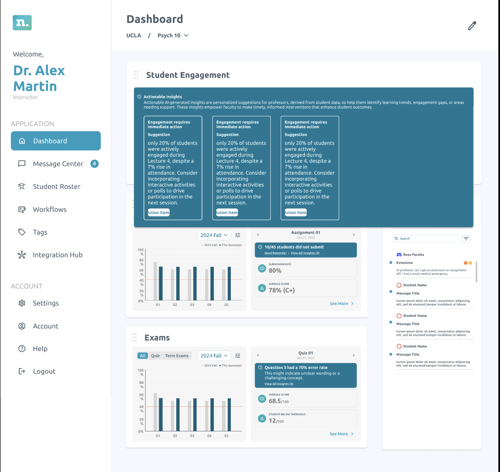

Context
Understanding Neoboard
Neoboard is a faculty dashboard platform built to help professors and deans have more informed conversations around student retention and to support underrepresented students in succeeding academically. It is a high-impact, low-effort solution that aggregates data from platforms like Canvas, Discord, Zoom, and Gmail.
It enables faculty to automate processes across systems, monitor student participation, and redirect students to academic resources on campus—effectively serving as an early alert system for colleges. Marisol and I were assigned to work on developing the faculty dashboard.
Problem
From our user interviews we realised that faculty often found the existing dashboard overwhelming and fragmented. Important information like student engagement, attendance, and risk indicators were scattered or unclear, making it difficult to know when and how to intervene. This lack of clarity limited their ability to provide timely, equity-driven support to students.
📋 Task: Examine the existing faculty dashboard, identify gaps, and redesign workflows for actionable insights. The goal was to simplify navigation, reduce friction in faculty tasks, and ensure that interventions could be made more effectively and equitably.
Process
Design system
Since Neoboard was an established company and had multiple interns over the years, it took me a few days to familiarise myself with the design system and update it for the components I needed for my tasks.
I especially had to keep checking for all eight types of colour blindness using Figma plugins so that the designs were inclusive and accessible.

Iterating designs
I started by sketching a series of low-fidelity wireframes to explore different ways of presenting actionable insights. These sketches were then developed into mid-fidelity layouts, where I focused on refining structure, hierarchy, and clarity. To ensure the final direction resonated with the team, I facilitated a voting process where everyone provided input as shown below.

Option 1 — card layout for actionable insights.
Team feedback
- Visually engaging
- Good use of motion
- Shows the most insights on one screen
- Too many clicks to get to the information needed
- Can’t see action items

Option 2 — alternate structure for team review.
What worked
- Least clicks
- Graphs are visible
- No need for learn more
- Directly takes you to actions you can take

Option 3 — additional direction from the voting round.
Concerns
- Too small
- Cannot show graphs
- Too many clicks
- Navigating to this is not intuitive
Usability testing
Throughout the testing process, we iterated on the designs and on how we framed our usability questions. Initially, many of our task-based prompts were too direct, which risked leading participants toward the “right” answers rather than capturing their natural behaviour. To reduce bias, we rephrased each question to focus on action verbs while keeping the instructions vague enough for users to explore intuitively.

Key takeaways
Presentation matters
Clearly communicating your design decisions ensures feedback is actionable and stakeholders understand your intent.
Learning by doing
As a Figma beginner at the begining of this experience, having hands-on practice, like using auto layout in real designs, fast-tracked my skill development and confidence.
Avoiding bias in testing
Through this experience I learnt how the simplest of words can make the largest difference in creating bias. Crafting neutral, open-ended questions are important to capture authentic user feedback and avoid leading participants.
More case studies